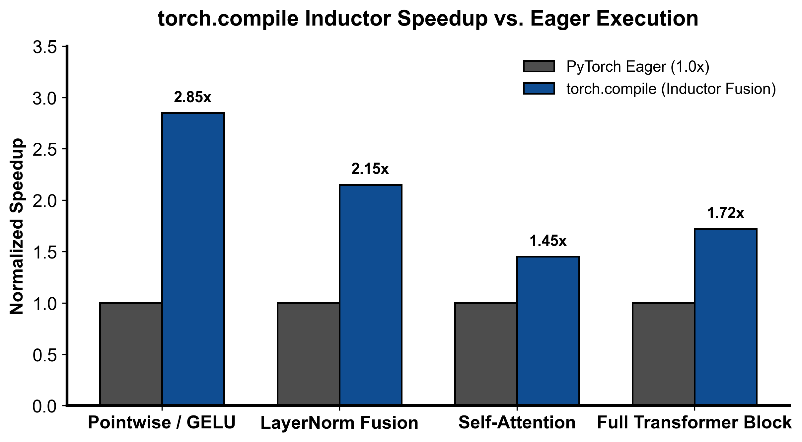

flowchart LR
Call["调用已编译模型 fn(*args)"] --> CheckGuards{"Guard 快速校验是否全部通过?"}
CheckGuards -->|命中缓存| FastPath["直接执行已编译高性能 Triton 机器码 (极速)"]
CheckGuards -->|Guard 失效| Recompile["触发重新捕获与重编译 (Recompilation)"]
Recompile --> DynamicCheck{"是否出现动态维度漂移 (Dynamic Shapes)?"}
DynamicCheck -->|是| SymInt["引入符号整数 (SymInt) 生成泛化内核"]
DynamicCheck -->|否| Specialize["针对当前固定尺寸特化编译"]
第 2 课：torch.compile：Graph Break、Guard 与动态 Shape
参考答案版：包含完整代码实现与问答题深度参考解析。建议先独立完成练习题后再展开核对。
本课目标与完成标准
本课产出：模拟 shape guard cache key，解释 graph capture、重新编译和 eager fallback 的诊断方法。
通过要求：唯一代码填空题通过给定检查；Q1～Q3 都给出因果链；能指出一个正确性边界和一个性能/运营取舍；总分至少 8/10。
与既有六条主线的边界
mlir/ 讲通用 IR；本课只讲 PyTorch 运行时如何从 Python frame 捕获图、建立 guards，并把图交给后端。
前置：Python、PyTorch、train 第 1～5 课、CUDA 基础。本课只补 AI Infra 缺口，不重复已经完成的 kernel 或并行算法推导。
核心概念与运行机制
核心操作与执行流程图解

图 2-1：torch.compile Inductor 融合算子对比 Eager 原生执行加速比（基于 scientific-figure-making 绘制）
图 2-2：torch.compile Guard 命中判定与自适应特化重编译时序
1. 它是什么，解决什么问题
PyTorch 标志性的即时执行模式（Eager Mode）赋予了算法开发者极致的 Python 交互性与调试便利性，但在大规模 AI Infra 与生产部署中暴露出两大核心性能劣势： 1. 显存读写瓶颈（Memory Bandwidth Wall）：在由大量细粒度算子（如 Bias-Add、LayerNorm、GELU、Residual Add）构成的网络中，GPU 大部分时间都在将中间激活从 HBM 读入 SRAM、计算后又写回 HBM，产生了海量冗余的高带宽访存往返； 2. CPU 调度发射瓶颈（CPU Overhead Wall）：每个小算子都需要穿透 Python 解释器与 Dispatcher，当底层 Kernel 仅执行几微秒时，CPU 发射延迟超过了 GPU 运算时间，造成严重的 GPU 计算流水线饥饿。
torch.compile（PyTorch 2.0 编译器技术栈）在彻底保持 Python 动态语法与原生开发体验的前提下，实现了媲美静态图引擎的高性能： - 三层协同架构：由 TorchDynamo（基于 CPython PEP 523 字节码重写前端捕获 FX 计算图）、AOTAutograd（在编译期捕获前向与反向联合图并生成高效重计算方案）与 TorchInductor（后端深度学习编译器代码生成器，自动将算子编译并融合为高性能 Triton / C++ 内核）三位一体构成； - 算子极致融合：如图 2-1 所示，通过将多个连续的点元运算（Pointwise）与归约运算（Reduction）在 SRAM 层面彻底融合为单个 Triton 内核，消除中间 HBM 往返，可取得 1.5x~2.5x 的稳定吞吐跃升； - 守卫验证与安全边界：通过 Guards 机制构建严密的前提契约，并在遭遇不可追踪代码时通过 Graph Break 安全分区降级。
2. 它如何工作
torch.compile 的执行流涵盖了从字节码捕获、Guard 校验到动态重编译的完整生命周期（时序如图 2-2 所示）：
- TorchDynamo 字节码拦截与 FX 图提取：
- 当调用
@torch.compile装饰的函数时，TorchDynamo 拦截 CPython 栈帧（Frame Evaluation）； - Dynamo 模拟执行 Python 字节码，将纯张量运算提取为
torch.fx.GraphModule，同时针对执行路径所依赖的环境前提生成一系列断言条件，即 Guards； - 生成的静态图交由后端 Inductor 生成融合 Triton 内核，并将编译产物与 Guards 关联存入进程级代码缓存。
- 当调用
- Guard 快速校验与极速路径（Fast Path）：
- 如图 2-2 所示，在后续调用
fn(*args)时，系统不会重新解析代码，而是以纳秒级速度执行编译期生成的 Guard 判定树（CheckGuards）：- 检查输入张量的属性：
dtype == torch.bfloat16、device == cuda:0、requires_grad == True； - 检查张量内存布局：
stride == (..., 1)（是否连续）； - 检查未被标记为动态维度的静态形状、以及引用的 Python 全局变量与模块属性是否保持未修改。
- 检查输入张量的属性：
- 若全部 Guard 命中，执行跳转至极速路径（Fast Path），直接调用已加载的 Triton 二进制代码，零 Python 解释与零 Dispatcher 冗余开销。
- 如图 2-2 所示，在后续调用
- Guard 失效与符号动态推导（Recompilation & SymInt）：
- 若新传入的张量尺寸或属性打破了现有 Guard（例如 Batch 尺寸从 2 变为 8），系统触发 Guard Failure 并启动重新编译（Recompilation）；
- 若开启了动态维度支持（
dynamic=True），Dynamo 将该变化维度抽象为符号整数（SymInt，如 \(s_0, s_1\)），生成参数化泛型 Triton 内核，使得后续任意合法 Batch Size 均可命中同一个泛型 Guard，避免重编译风暴； - 若未开启或算子强依赖静态常量，系统将针对当前尺寸编译出新的特化代码变体（Specialized Variant）。
- Graph Break 的发生与分区执行：
- 当 Dynamo 在 Python 字节码中遇到无法被安全抽象为符号图的语法结构时（例如调用了未被追踪的 C-Extension、打印了
print(x.item())、或基于张量具体浮点数值进行数据依赖的分支跳转if x.sum() > 0:）； - Dynamo 无法将后续计算统一打包，被迫触发 Graph Break：将当前函数切分为“前向图片段 1 \(\to\) Python 原生解释器回退执行 \(\to\) 前向图片段 2”，以破坏算子全局融合为代价确保程序运行的绝对语义正确。
- 当 Dynamo 在 Python 字节码中遇到无法被安全抽象为符号图的语法结构时（例如调用了未被追踪的 C-Extension、打印了
3. 正确性条件与常见误区
- 编译特化与 Guards 前提的数学等价性：
- Inductor 生成的优化内核并非无条件成立，其有效性完全绑定在 Guard 集合的真值空间内。例如，Inductor 在假设张量在物理内存中是行连续（Contiguous）的前提下生成了合并访存指令；若输入一个经过转置但未
contiguous()的张量且 Guard 未能拦截，将导致 GPU 读取到完全错位的内存脏数据。
- Inductor 生成的优化内核并非无条件成立，其有效性完全绑定在 Guard 集合的真值空间内。例如，Inductor 在假设张量在物理内存中是行连续（Contiguous）的前提下生成了合并访存指令；若输入一个经过转置但未
- “设置
dynamic=True就能一劳永逸阻止重编译”的伪常识：- 常见误区：误以为只要传入
dynamic=True，任何维度变化都不会触发重新编译。 - 实际情况：
- 0/1 特化保护：PyTorch 编译器对维度为 0 或 1 的情况执行强制特化（因为 Batch=1 时无需考虑跨批次循环，且能消除大量广播代码）。当维度从 1 变为 2 时，必定触发重编译；
- 非张量依赖与全局状态漂移：若函数内部读取了 Python 标量、布尔开关或全局字典，这些状态的改变同样会直接击穿 Guard；
- 算子原生约束：某些特定底层算子（如特定版本的 FlashAttention 或硬件要求特定分块对齐的 GEMM）硬性要求输入维度必须是 16 或 64 的整数倍，迫使编译器在此处强制专门化。
- 常见误区：误以为只要传入
fullgraph=True的正确定位：fullgraph=True绝非性能增强开关，而是一个严格的静态断言调试工具。开启后一旦发生任何 Graph Break，程序立即抛出异常崩溃。它适合在 CI/CD 中验证网络是否完全可编译，严禁直接在包含日志、动态打印或外部系统调用的复杂生产主循环中强行开启。
4. 性能与工程取舍
- 静态特化（Specialization） vs. 动态泛化（Dynamic Shapes）：
- 静态特化：为固定的 \(M, N, K\) 形状编译独占内核。Inductor 可以执行深度的常量折叠、展开循环（Loop Unrolling）、并选择最优的 Thread Block Tile 大小，Kernel 执行时间达到物理极致；但在服务动态输入（如不定长对话）时会导致严重的“首请求长卡顿”与编译风暴（Compilation Storm），甚至耗尽磁盘缓存与主机内存。
- 动态泛化（
dynamic=True）：引入SymInt生成通用代码，显著收敛编译变体数量（通常仅需编译 1~2 次）；但代价是无法将维度作为常量内联，可能错失部分极限激进的编译器 Tile 调优机会。
- JIT 编译时延与冷启动惩罚（Warmup Latency Overhead）：
- 在大模型训练或推理服务冷启动阶段，首个 Step 往往需要经历长达数十秒甚至数分钟的 Dynamo 追踪与 Inductor Triton 代码生成。工程落地必须采用预热输入（Warmup Inputs）进行预先捕获，或利用 PyTorch AOTInductor / 预存编译缓存（Persistent Cache）跳过生产运行时的实时编译。
具体演示
设输入张量几何维度为 shape = (B, S, H)，其中隐层维度 H = 4096 固定，而 Batch B 与序列长度 S 支持动态变长（dynamic_dims = {0, 1}）： 1. 编译期构建的教学版 Guard Key 将动态维度抽象为通配符通配： \[\text{GuardKey} = (("*", "*", 4096), \text{"bfloat16"}, \text{"cuda"})\] 2. 运行时请求判定： - 请求 1：shape = (2, 128, 4096), dtype = "bfloat16", device = "cuda" \(\to\) 匹配 Guard Key，命中缓存，直接发射内核； - 请求 2：shape = (8, 256, 4096), dtype = "bfloat16", device = "cuda" \(\to\) 维度 0 和 1 虽变但被通配符覆盖，且静态维度 4096、精度与设备完全一致 \(\to\) 再次命中缓存，零重编译； - 请求 3：shape = (2, 128, 2048), dtype = "bfloat16", device = "cuda" \(\to\) 静态隐层维度 \(H\) 改变 \(\to\) Guard 失效，触发重编译并生成新的特化变体。
实践任务：唯一代码填空题
补齐教学版 guard key：动态维用 *，静态维保留精确大小。
只能修改 TODO/______ 位置，不得删除断言或放宽通过条件。
Code
def guard_key(shape, dynamic_dims, dtype, device):
if any(i < 0 or i >= len(shape) for i in dynamic_dims):
raise ValueError("dynamic dim out of range")
dynamic_dims = set(dynamic_dims)
guarded_shape = tuple("*" if i in dynamic_dims else size
for i, size in enumerate(shape))
# TODO：dtype/device 仍属于 guard。
return ______
assert guard_key((2, 128, 4096), {0, 1}, "bf16", "cuda") == (("*", "*", 4096), "bf16", "cuda")
assert guard_key((8, 256, 4096), {0, 1}, "bf16", "cuda") == (("*", "*", 4096), "bf16", "cuda")检查方法
运行本单元格，所有断言必须通过；再补一个边界输入并解释预期。
Q1
graph break 与 guard failure 有什么区别？
你的答案：
Q2
把 dynamic=True 打开后仍重新编译，可能有哪些原因？
你的答案：
Q3
什么时候先用 fullgraph=True，什么时候不适合长期打开？
你的答案：
评分规则
- 代码 4 分：正常输入 2 分、边界输入 1 分、解释 1 分；
- Q1～Q3 各 2 分；
- 一票否决：混淆测量与推测、忽略租户/请求隔离、用平均值掩盖尾延迟、删除失败路径。